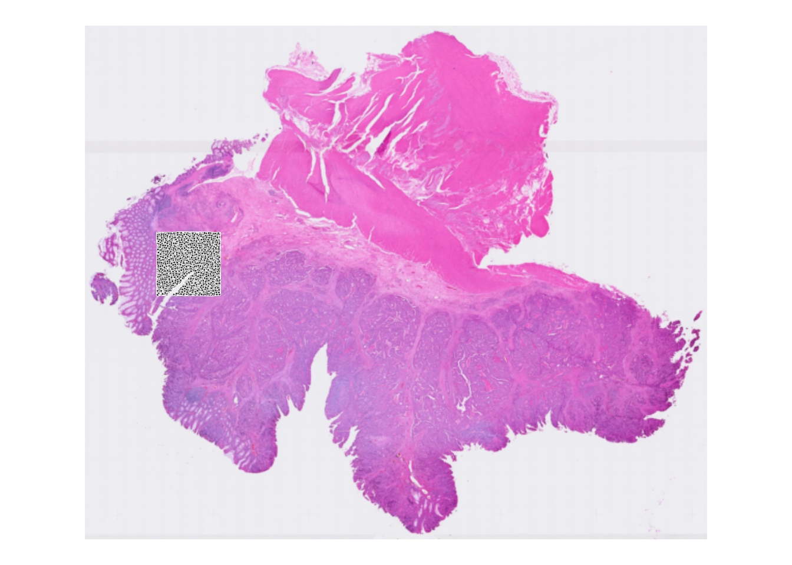

Exercise 1
Learning Objectives
By the end of this exercise, you will be able to:
- Understand the structure of a
SpatialExperimentobject. - Access and interpret
spatialCoordsandimgData. - Perform basic subsetting operations on
SpatialExperimentobjects. - Combine multiple
SpatialExperimentobjects. - Apply image transformations (rotation, mirroring) to spatial data.
Libraries
Data for the course
We will start with downloading the data. We will work on a VisiumHD dataset from a human colon cancer study published recently. A Visium HD slide from one patient (P2CRC) used in the article is available from the 10X website. We will focus on the “binned output” provided available as an output of the Space Ranger pipeline.
The dataset contains normal adjacent tissue (NAT) and colorectal carcinoma (CRC) from 5 patients.
We will start downloading and processing one of the Human colon cancer samples (P1).
Have a look at the paper and 10X website, to find out how was the tissue processed for spatial profiling. How are the transcript molecules measured?
Which version of the Space Ranger tool was used to process the data, and what is the output folders containing? This page will be useful: https://www.10xgenomics.com/support/software/space-ranger/latest/analysis/outputs/output-overview. Additionally the Space Ranger “web summary” gives a good idea about the quality of the processed sample: https://cf.10xgenomics.com/samples/spatial-exp/3.0.0/Visium_HD_Human_Colon_Cancer/Visium_HD_Human_Colon_Cancer_web_summary.html
The measurements of RNA molecules is indirect, through capture of ligated probe pairs targeting the whole protein-coding transcriptome.
An instrument called Visium CytAssist is used to control reagent flow and better capture target probes from the tissue (in particular to limit problematic free diffusion of transcripts).
The dataset was processed with Space Ranger version 3.0.0. Note that this is not the latest version: v4.0 is the latest and it has cool feature, such as a segmented output.
if (!dir.exists("data/Human_Colon_Cancer_P1/binned_outputs/")) {
dir.create("data")
download.file(
url = "https://seq-spatial-transcriptomics-training.s3.eu-central-1.amazonaws.com/Human_Colon_Cancer_P1.tar.gz",
destfile = "data/Human_Colon_Cancer_P1.tar.gz"
)
untar(
tarfile = "data/Human_Colon_Cancer_P1.tar.gz", exdir = "data/"
)
file.remove("data/Human_Colon_Cancer_P1.tar.gz")
} else {
message("Data exists, please proceed to next steps!")
}[1] TRUEWe will import the dataset into a SpatialExperiment object. For these exercises, we choose to use the largest bin size of 16 µm, and we will subset the dataset for faster processing during the practicals:
# Import Visium HD data from Space Ranger output into a SpatialExperiment object.
spe <- TENxVisiumHD(
spacerangerOut = "data/Human_Colon_Cancer_P1/",
processing = "filtered",
format = "h5",
images = "lowres",
bin_size = "016"
) |>
import()
# we subset the dataset based on x and y coordinates of the tissue slice
spe <- spe[, spatialCoords(spe)[, 1] * scaleFactors(spe) > 70 &
spatialCoords(spe)[, 1] * scaleFactors(spe) < 130 &
spatialCoords(spe)[, 2] * scaleFactors(spe) > 200 &
spatialCoords(spe)[, 2] * scaleFactors(spe) < 260]What other bin sizes are available? Which is the smallest capture unit and what do the other bin sizes mean? Why wouldn’t you always want to work with the smallest available bin?
In data/Human_Colon_Cancer_P1/binned_outputs you will find three directories:
square_002um
square_008um
square_016umThe capture bins are 2µm^2 (adjacent) on the VisiumHD slide, see Fig. 2a in the paper. Larger bins are pools of 2 µm bins (16 bins for an 8 µm bin, 64 bins for a 16 µm bin). Working with those could be handy because the number of molecules captured will be higher, reducing the sparsity of the data at the cost of resolution.
Exploring the object
In this first exercise, we will dive into the SpatialExperiment object, a cornerstone of spatial transcriptomics analysis in R. We will explore the different components of the loaded object, and perform basic manipulations. By the end of this session, you will have a solid understanding of how to handle spatial transcriptomics data within the R/Bioconductor ecosystem.

SpatialExperiment class structureThe different slots of the SpatialExperiment object can be approached with several accessor functions that correspond to their names. As the SpatialExperiment is an extension of the SingleCellExperiment class, methods developed to be applied on SingleCellExperiment objects (or by extension on SummarizedExperiment objects) can also be applied.
Check out the outputs of the following functions, that you should already be familiar with:
colData()rowData()assay()reducedDims()
Check out the outputs of the following functions, which are specific to the SpatialExperiment class:
Questions:
- What kind of data is in the different slots?
- How many spots and genes do we have retained in the
speobject? - Are all spots within the tissue area?
The slot colData contains metadata of each of the 14207 spots:
colData(spe) |> head()DataFrame with 6 rows and 6 columns
barcode in_tissue array_row array_col
<character> <integer> <integer> <integer>
s_016um_00144_00175-1 s_016um_00144_00175-1 1 144 175
s_016um_00204_00145-1 s_016um_00204_00145-1 1 204 145
s_016um_00191_00159-1 s_016um_00191_00159-1 1 191 159
s_016um_00111_00233-1 s_016um_00111_00233-1 1 111 233
s_016um_00202_00235-1 s_016um_00202_00235-1 1 202 235
s_016um_00102_00186-1 s_016um_00102_00186-1 1 102 186
bin_size sample_id
<character> <character>
s_016um_00144_00175-1 016 sample01
s_016um_00204_00145-1 016 sample01
s_016um_00191_00159-1 016 sample01
s_016um_00111_00233-1 016 sample01
s_016um_00202_00235-1 016 sample01
s_016um_00102_00186-1 016 sample01ncol(spe)[1] 14207We have a column in_tissue here, and we can check whether spots are covered by the tissue:
colData(spe) |>
as.data.frame() |>
group_by(in_tissue) |>
summarise(number = n())# A tibble: 1 × 2
in_tissue number
<int> <int>
1 1 14207The slot rowData contains metadata about the 18085 genes for which we measured expression:
rowData(spe) |> head()DataFrame with 6 rows and 3 columns
ID Symbol Type
<character> <character> <factor>
ENSG00000187634 ENSG00000187634 SAMD11 Gene Expression
ENSG00000188976 ENSG00000188976 NOC2L Gene Expression
ENSG00000187961 ENSG00000187961 KLHL17 Gene Expression
ENSG00000187583 ENSG00000187583 PLEKHN1 Gene Expression
ENSG00000187642 ENSG00000187642 PERM1 Gene Expression
ENSG00000188290 ENSG00000188290 HES4 Gene Expressionnrow(spe)[1] 18085The assay is the core count matrix of the object, corresponding to all genes (rows) and all spots (columns):
assay(spe)<18085 x 14207> sparse DelayedMatrix object of type "integer":
s_016um_00144_00175-1 ... s_016um_00109_00223-1
ENSG00000187634 0 . 0
ENSG00000188976 0 . 0
ENSG00000187961 0 . 0
ENSG00000187583 0 . 0
ENSG00000187642 0 . 0
... . . .
ENSG00000212907 7 . 5
ENSG00000198886 29 . 15
ENSG00000198786 0 . 1
ENSG00000198695 2 . 1
ENSG00000198727 11 . 11The slot for reducedDims is empty for now, as we didn’t perform any dimensionality reduction calculations yet:
reducedDims(spe)List of length 0
names(0): The slot spatialCoords maps each spot to the full resolution image:
spatialCoords(spe) |> head() pxl_col_in_fullres pxl_row_in_fullres
s_016um_00144_00175-1 10076.365 28256.34
s_016um_00204_00145-1 8356.073 24733.65
s_016um_00191_00159-1 9167.045 25500.94
s_016um_00111_00233-1 13447.496 30216.22
s_016um_00202_00235-1 13613.955 24899.03
s_016um_00102_00186-1 10696.244 30716.82The slot imgData lists all available images linked to the dataset, their resolution and a scaling factor used to convert pixels coordinates relative to the full resolution image coordinates (above).
imgData(spe)DataFrame with 1 row and 4 columns
sample_id image_id data scaleFactor
<character> <character> <list> <numeric>
1 sample01 lowres #### 0.00843811The H&E image can be exported asa raster image for plotting using:

We saw that the rownames of the object were Ensembl IDs. However, it’s more convenient to have gene symbols. Therefore, we replace the Ensembl IDs, with the symbols stored in rowData (making sure to keep the ensembl ID if these are not unique):
rownames(spe) <- uniquifyFeatureNames(ID = rowData(spe)$ID, names = rowData(spe)$Symbol)To get a visual overview the slide we can use ggspavis::plotVisium. First without spots:
plotVisium(spe, spots = FALSE)
And with spots overlayed:
plotVisium(spe, point_shape = 22, point_size = 0.5)
Why do we see only spots in a specific area?
After loading the object above, we subsetted the dataset for faster processing. Therefore we only see the spots overlayed with the selected area. You can also visualize only the selected area with the zoom option, see next exercise.
It’s possible to colour spots according to some variable, e.g., the number of read counts for a selected gene (i.e., PIGR):
plotVisium(spe,
annotate = "PIGR",
assay = "counts",
zoom = TRUE,
point_size = 1,
point_shape = 22
)Check out the usage of plotVisium with ?plotVisium. Create a plot that zooms into the spots, and colors the spots according to column array_row.
In which slot is array_row stored and what does it represent?
The column array_row is stored in colData, it represents in which row the spot is positioned. Of course, plotting this value is not particularly useful for biology. We will visualize more sensible values in the next chapter, when we do the quality control.
We use the argument annotate to color according to a column in colData, and we zoom in by specifying zoom = TRUE:
p <- plotVisium(spe, annotate = "array_row", zoom = TRUE, point_shape = 22)
p
Retain only observations that map to tissue
Subset the SpatialExperiment object (and save it into a new object) to retain only spots that are within the tissue area
How many spots were present in “spe” object? And how many are left after selecting for in-tissue spots only (object sub)?
# Subset to in-tissue spots only
sub <- spe[, colData(spe)$in_tissue]# Check dimensions of original and subsetted objects
dim(spe)[1] 18085 14207dim(sub)[1] 18085 14207Both objects have the same dimensions. Our spe object is a subset of tissue slice were all spots map tissue. Therefore the filtering here is not relevant.
Save the object
Save the filtered SpatialExperiment object for the next steps:
dir.create("results/day1", showWarnings = FALSE, recursive = TRUE)
saveHDF5SummarizedExperiment(spe,
dir = "results/day1", prefix = "01.1_spe", replace = TRUE,
chunkdim = NULL, level = NULL, as.sparse = NA,
verbose = NA
)Clear your environment
Key Takeaways:
- The
SpatialExperimentclass is a versatile container for spatial transcriptomics data. - It allows for easy access and manipulation of spatial coordinates, image data, and assay data.
- Various operations like subsetting, combining, and image transformations can be performed efficiently.